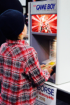
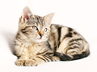

Do Rascunho à Obra-Prima.

Aqueles cenários de tirar o fôlego nos animes não surgem por acaso. Por trás de cada céu estrelado, cidade cyberpunk ou vilarejo aconchegante, existe um trabalho minucioso de direção de arte e worldbuilding. Os cenários dos animes não servem apenas como pano de fundo; eles contam histórias, ditam o tom da narrativa e transmitem emoções que muitas vezes as palavras não conseguem expressar.
Amei demais esse post! Você sempre traz tanta energia positiva para a comunidade.

Kairos_GamerVocê é a melhor!

NekoChan_99Sua energia é contagiante! Sempre me sinto mais motivada depois de ver seus posts.